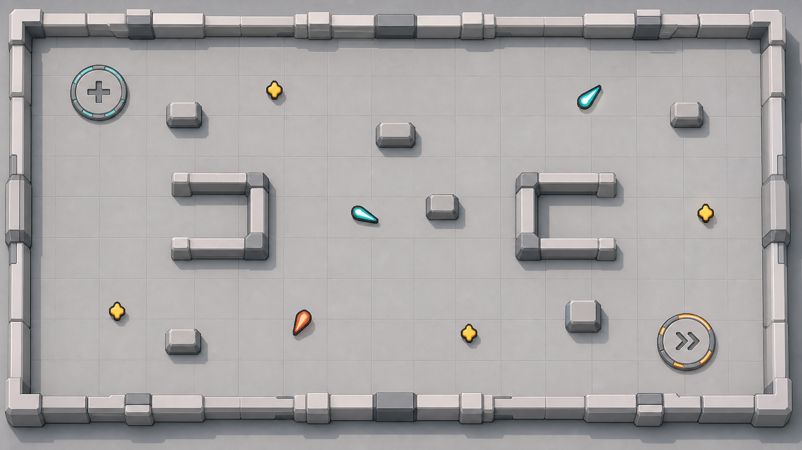
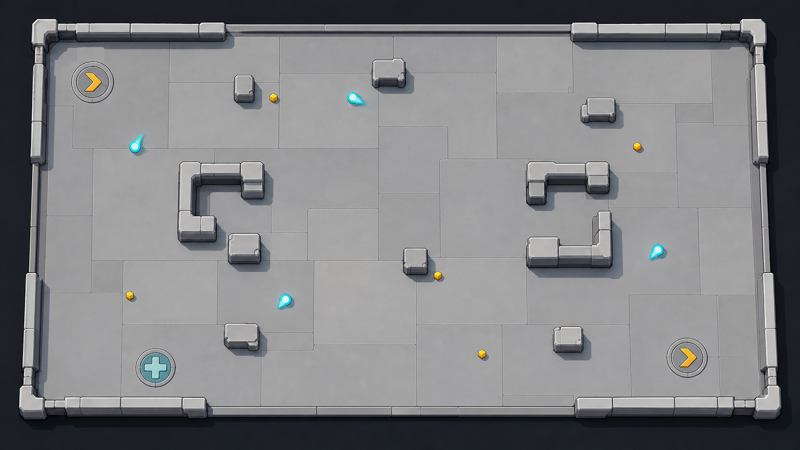
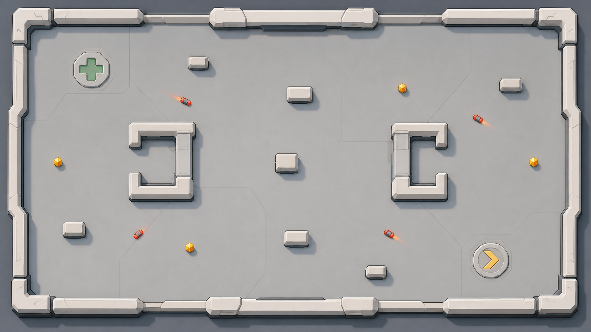

Quiet Grid

- Closest to the current 288-unit grid.
- Thin seams preserve orientation without making every tile a card.
- Lowest implementation risk.
A complete inventory of the image identities and code-owned layers that construct the current map, followed by three light-gray general-SF hangar directions. This report is review evidence only; none of the concepts are production-approved assets.

The first thirteen entries are environment and functional-terrain images. The next four are reward objects placed in the world. The final two are shared cue images consumed directly by terrain rendering. Canvas values are manifest truth; alpha bounds and color counts are measured from the current PNGs.
| Preview | Semantic ID / file | Canvas · alpha · colors | Runtime role and owner | Diagnosis | Decision |
|---|---|---|---|---|---|
 | world/surface_panel_9world/presentation/world_surface_panel_9.pngSHA b76dfeb2af4d… | 288×288 288×288 4 colors | Walkable floorVehicleWorldMeshBuilder | Dark UI-card frame; repeated and stretched across unlike module sizes. | Replace |
 | world/wall_segment_9world/presentation/world_wall_segment_9.pngSHA 3e14f4d5505a… | 192×96 192×96 4 colors | Boundary + structural wallsVehicleWorldMeshBuilder | User-selected TO-BE is acceptable; long segments must repeat at fixed scale instead of stretching. | Retain |
 | world/terrain_solid_cover_blockworld/terrain_solid_cover_block.pngSHA 741946693b29… | 192×192 160×176 6,199 colors | Generated isolated cover rectsVehicleWorldMeshBuilder | Noisy pseudo-material, excess edge parts, and non-uniform stretching make blockers hard to read. | Replace |
 | world/world_bulkhead_intactworld/world_bulkhead_intact.pngSHA d1911187be70… | 192×192 176×65 2,781 colors | Closed breakable barrierVehicleRun._draw_terrain | State silhouette is useful and compatible with the retained pale wall. | Retain / edge clean |
 | world/world_bulkhead_damagedworld/world_bulkhead_damaged.pngSHA c4a3471e4539… | 192×192 176×65 3,367 colors | Damaged barrier stateVehicleRun._draw_terrain | Large crack provides clear non-color state separation. | Retain / edge clean |
 | world/world_bulkhead_openworld/world_bulkhead_open.pngSHA fa635dfb7868… | 192×192 176×65 3,448 colors | Breached barrier stateVehicleRun._draw_terrain | Open center is a strong resolved-state silhouette. | Retain / edge clean |
 | world/facility_repair_padworld/facility_repair_pad.pngSHA c6b915a9cee5… | 192×192 176×176 430 colors | Live circular repair fieldVehicleCombatRenderer | One complete circle and one large plus; already matches the simplified functional contract. | Retain |
 | world/facility_overdrive_padworld/facility_overdrive_pad.pngSHA 330b159fc6ec… | 192×192 176×176 437 colors | Live circular overdrive fieldVehicleCombatRenderer | One complete circle and one large chevron; role is immediately readable. | Retain |
 | world/facility_transit_gateworld/facility_transit_gate.pngSHA 8cd361f68f95… | 192×192 175×175 3,303 colors | Paired floor portalVehicleRun._draw_terrain | The ring shape is valid, but runtime stacks another ring plus two code arcs over it. | Simplify integration |
 | world/facility_arc_surge_stripworld/facility_arc_surge_strip.pngSHA 2f9e921954e6… | 192×192 49×176 1,322 colors | Arc Surge fixtureVehicleRun._draw_terrain | Runtime draws four small and three large copies over one beam corridor. The seven-copy composition is the failure. | Recompose once |
 | world/wear_tile_intactworld/wear_tile_intact.pngSHA 54ca095c04f4… | 240×160 231×146 766 colors | Stable collapse tileVehicleRun._draw_terrain | Dark inset plate will look foreign on the new light-gray deck. | Replace family |
 | world/wear_tile_crackedworld/wear_tile_cracked.pngSHA a7e36ffa32fd… | 240×160 231×146 1,559 colors | Warning collapse stateVehicleRun._draw_terrain | State crack is useful; base plate must share the new floor family. | Replace family |
 | world/wear_tile_collapsedworld/wear_tile_collapsed.pngSHA be2f0c1831b0… | 240×160 231×146 2,864 colors | Open collapse stateVehicleRun._draw_terrain | Required open silhouette, but current edge/fringe and dark plate conflict with the new deck. | Replace family |
 | pickup/experience_masterpickups/pickup_experience_master.pngSHA 88aec5b31fbd… | 64×64 38×56 990 colors | XP shards + placed XP lootVehicleCombatRenderer / VehicleRun | Centered, but small XP currently resolves to only about 14×21 world units. | Replace + enlarge |
 | pickup/reward_cratepickups/pickup_reward_crate.pngSHA dad2d74d6dbf… | 64×64 52×53 1,471 colors | Breakable map reward crateVehicleRun._draw_pickups_and_crates | Large amber mass reads clearly against either light-gray floor direction. | Retain |
 | pickup/repairpickups/pickup_repair.pngSHA 1c1db12888dc… | 48×48 40×39 682 colors | Loose repair pickupVehicleRun / guidebook | Distinct plus silhouette and support color are already sufficient. | Retain |
 | pickup/experience_recallpickups/pickup_experience_recall.pngSHA 1ab513abbfd6… | 64×64 54×48 1,121 colors | Experience recall pickupVehicleRun / guidebook | Three-way inward silhouette is unique and fills the canvas well. | Retain |
 | cue/ringeffects/cues/cue_ring.pngSHA 92bda7c417b6… | 128×128 114×115 352 colors | Live radius / transit outer ringVehicleRun / renderer | Valid for collision truth, but should not duplicate a complete transit-gate ring. | Restrict use |
 | cue/beam_strip_9effects/cues/cue_beam_strip_9.pngSHA f30a3e2027de… | 128×32 115×21 47 colors | Live Arc Surge corridorVehicleRun._draw_terrain | Appropriate shared stretch texture for the dynamic corridor. | Retain |
These are not additional art assets. They own placement, topology, collision truth, state, or dynamic dimensions. The fix should reduce their visual assembly responsibilities without moving gameplay truth into PNGs.
VehicleStageBackdrop draws WORLD_CANVAS.VehicleFieldSurfacePatternCompiler produces 1×1, 2×1, 1×2, 2×2 fragments; VehicleWorldMeshBuilder fits one PNG into each.VehicleWorldMeshBuilder draws the retained wall PNG.cover_rects use one solid-cover PNG.VehicleTerrainRuntime owns state; VehicleRun selects a texture.VehicleCombatRenderer scales one pad PNG to the live gameplay radius.VehicleRun draws colored polygons and outlines when debug is enabled.

Concept artifact: the second overdrive pad and extra pad rings are not part of this direction.

Concept artifacts: remove the faint random scuff/seam marks and projectile trails from the production version.
Proceed with Near-Solid Bay as the target direction. It best matches the requested hierarchy: one quiet light-gray hangar deck, clearly visible pale walls, and gameplay objects carrying the color. Its generated scuffs, stray seams, and projectile trails are explicitly excluded from production.
The production manifest contains 57 image identities in total: one attachment plus 56 regular asset entries. After the 19 direct map identities above, 38 additional identities can appear over the map but do not construct its floor, wall, terrain, facilities, or loot placement. They are listed here to make the boundary explicit rather than silently omitting them.
attachment/player_craft_body
actor/scrap_drone, actor/needle_drone, actor/spark_minelet, actor/chaser, actor/rammer, actor/bulkhead_guard, actor/shooter, actor/turret, actor/mine, actor/artillery_spotter, actor/controller, actor/generator, actor/shield_escort, actor/repair_tender, actor/drone_carrier, actor/splitter_barge, actor/interceptor_tower, actor/beam_sentinel, actor/boss_pylon
boss/colossus, boss/leviathan, boss/titan, boss/behemoth, boss/crown, boss/node_active, boss/node_damaged, boss/node_resolved
secondary/seeker, secondary/escort_drone, secondary/orbit_blade, secondary/wake_mine
projectile/energy_teardrop
effect/emp_release
cue/health_bar_frame_9, cue/diamond_marker, cue/disk_mask, cue/crosshair